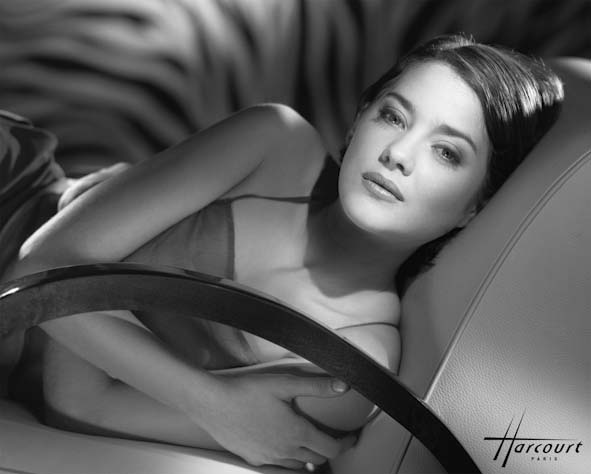

She is the only actor ever to win an Academy Award for a performance given entirely in French — and she did it by disappearing into the life of Édith Piaf. From a childhood spent backstage in Orléans to Christopher Nolan blockbusters and the front rows of Paris fashion, Marion Cotillard has built one of the most respected careers in European cinema.

| Full name | Marion Cotillard |
| Born | 30 September 1975, Paris, France |
| Age | 51 years old (in 2026) |
| Height | 1.69 m (5 ft 7 in) — as listed in her biographies |
| Nationality | French |
| Profession | Actress, singer, producer, environmental activist |
| Years active | 1982 – present |
| Best known for | La Vie en Rose (2007), Inception (2010), Rust and Bone (2012), Two Days, One Night (2014) |
| Net worth | Estimated at $30 million – $50 million (see the net worth section below — no audited figure exists) |
| Partner | Guillaume Canet (2007–2025; separation announced June 2025); two children |
Marion Cotillard is a French actress whose career is, in the simplest terms, a rare balance: she is at home in a small French art-house drama and in a Hollywood blockbuster, and she has been taken seriously in both for almost thirty years. She is best known around the world as Édith Piaf in La Vie en Rose (2007), the performance that won her the Academy Award for Best Actress — and she is equally known, in France, as a working actress who grew up inside the theatre and never left it behind.
What makes her story unusual is how early it started and how steadily it grew. Cotillard did not arrive in cinema as a sudden discovery. She was acting as a small child, learning her craft in her parents' theatre world, and she spent a decade in French film and television before the role that changed everything. The Oscar did not make her a Hollywood star in the usual sense; it gave her the freedom to choose — Nolan one year, the Dardenne brothers the next — and she has used that freedom ever since.
Marion Cotillard was born on 30 September 1975 in Paris, France, which makes her 51 years old in 2026. She grew up in an artistic household: her father, Jean-Claude Cotillard, was an actor, teacher, former mime and theatre director, and her mother, Niseema Theillaud, was an actress and drama teacher. She has two younger brothers, the twins Quentin and Guillaume.
She was raised first in Alfortville, a southern suburb of Paris, in a tower-block flat, and later near Orléans, where her father set up his own theatre company. Acting was not a distant dream in that house — it was daily life. As a child she would imitate Louise Brooks and Greta Garbo in her bedroom, and she appeared on stage for the first time at the age of three, opposite her mother. At fifteen she entered the Conservatoire d'art dramatique in Orléans, and after graduating in 1994 she moved to Paris to pursue acting, paying her bills as a teenager by making keychains at home and selling them at sweet shops.

Cotillard made her screen debut at the age of six, in a short film shown on French television in 1982, and had her first English-speaking role at seventeen, in the television series Highlander (1993). Her feature-film debut came in The Story of a Boy Who Wanted to Be Kissed (1994), followed by small roles in French films through the mid-1990s, including Arnaud Desplechin's My Sex Life... or How I Got into an Argument (1996).
Her breakthrough came in 1998, in Gérard Pirès' action comedy Taxi, playing Lilly Bertineau, the girlfriend of a delivery driver played by Samy Naceri. The film was a box-office hit in France, selling more than six million tickets, and earned Cotillard a César nomination for Most Promising Actress. She returned for Taxi 2 (2000) and Taxi 3 (2003), and in 2001 she played twins of opposite characters in Pretty Things, earning a second nomination in the same category. In 2003 she made her Hollywood debut in Tim Burton's Big Fish, and in 2004 she won the César Award for Best Supporting Actress for her role as the vengeful Tina Lombardi in Jean-Pierre Jeunet's A Very Long Engagement.
In 2007, Cotillard was chosen by director Olivier Dahan to play the French singer Édith Piaf in his biographical film La Vie en Rose (La Môme) — before he had even met her, after noticing a similarity between Piaf's and Cotillard's eyes. The film follows Piaf across five decades of her life, and Cotillard had to age, sing and break down on screen in a single performance. At its premiere at the 2007 Berlin International Film Festival she received a fifteen-minute standing ovation.
The film was a box-office hit in France, with more than five million admissions, and made $86 million worldwide on a $25 million budget. The awards followed one after another: a Golden Globe — the first for a non-English-language performance since 1972 — a BAFTA, a César for Best Actress, a Lumière Award, and, on 24 February 2008, the Academy Award for Best Actress. She became the first woman, and only the second person after Adrien Brody, to win both a César and an Oscar for the same performance, and she remains the only actor ever to win an Academy Award for a performance given entirely in French. She was also the first Best Actress Oscar winner for a non-English-language performance since Sophia Loren in 1961. She was the second French actress to win the Academy Award for Best Actress, after Simone Signoret in 1960 — and the third French performer overall to win an Oscar, after Signoret and Juliette Binoche, who won Best Supporting Actress in 1997.
After the Oscar, Cotillard's Hollywood career moved quickly. She starred opposite Johnny Depp and Christian Bale as Billie Frechette in Michael Mann's Public Enemies (2009), and played Luisa Contini in Rob Marshall's musical Nine (2009), singing two numbers herself and earning a Golden Globe nomination. In 2010 she played Mal Cobb, the dead wife who haunts Leonardo DiCaprio's Dom Cobb, in Christopher Nolan's Inception — a film that made $825 million worldwide, with DiCaprio praising her ability to be "strong and vulnerable and hopeful and heartbreaking all in the same moment".
She returned to Nolan for The Dark Knight Rises (2012) as Talia al Ghul, appeared in Woody Allen's Midnight in Paris (2011) as Picasso's mistress Adriana, and in Steven Soderbergh's thriller Contagion (2011) alongside Kate Winslet, Jude Law, Gwyneth Paltrow and Matt Damon. In 2013 she had her first leading role in an American film, James Gray's The Immigrant, playing a Polish nurse arriving in 1920s New York — a script Gray wrote especially for her, and a performance that won her the New York Film Critics Circle Award. In 2015 she played Lady Macbeth opposite Michael Fassbender, and in 2016 she starred opposite Brad Pitt in Robert Zemeckis's Second World War spy film Allied.
Between the blockbusters, Cotillard kept returning to the European drama that made her. In Jacques Audiard's Rust and Bone (De rouille et d'os, 2012) she played Stéphanie, an orca trainer who loses her legs after a work accident. The film premiered in competition at Cannes to a ten-minute standing ovation, and Cate Blanchett wrote in Variety that Cotillard had "created a character of nobility and candour". She earned a Golden Globe nomination and her fifth César nomination for the role.
Her second Academy Award nomination came for the Dardenne brothers' Two Days, One Night (Deux jours, une nuit, 2014), in which she plays Sandra, a Belgian factory worker who has one weekend to convince her co-workers to give up their bonuses so she can keep her job. The film earned a fifteen-minute standing ovation at Cannes, and her performance won the European Film Award for Best Actress and was praised as a career high. It also made her the first actor ever nominated for an Oscar for a Belgian film.
In 2021 Cotillard starred as opera singer Ann Defrasnoux opposite Adam Driver in Leos Carax's musical Annette, earning a Golden Globe nomination, and she produced the documentary Bigger Than Us, about young activists around the world. She has worked twice more with Arnaud Desplechin, in Ismael's Ghosts (2017) and Brother and Sister (2022), and appeared alongside Kate Winslet in Lee (2023). In 2023 she played the French writer and photographer Carole Achache in the docudrama Little Girl Blue, directed by Carole's daughter Mona Achache — a performance praised as a full Method immersion, which earned her an eighth César nomination, making her the first actress ever nominated for a César for a documentary film.
Her recent work keeps crossing between film and television: she played Cleopatra in Guillaume Canet's Asterix & Obelix: The Middle Kingdom (2023), appeared in the Apple TV+ climate anthology Extrapolations (2023), starred in Lucile Hadžihalilović's fantasy drama The Ice Tower (2025), and joined season 4 of Apple TV+'s The Morning Show in 2025 as Celine Dumont. In 2026 she stars in Guillaume Canet's psychological thriller Karma, with further 2026 releases reported including Roma Elastica and Milo, and she has been reported as starring in Christopher McQuarrie's Second World War film Broadsword and in Emmanuelle Bercot's historical drama The Enraged, which began shooting in February 2026. In November 2026 she is president of the jury of the Marrakech Film Festival. She has also returned again and again to the stage, playing Joan of Arc in Arthur Honegger's oratorio Joan of Arc at the Stake in productions around the world.
Cotillard has played Joan of Arc in many productions of Arthur Honegger's oratorio Joan of Arc at the Stake, performing with orchestras in cities including New York, Madrid, Berlin and Paris. She also sings and plays several instruments, and has toured in France and Belgium with the band Yodelice under the stage name "Simone" — the musical side of a career that has always run between cinema, theatre and song.
Her awards, in one place: Academy Award for Best Actress (La Vie en Rose, 2008); BAFTA Award for Best Actress in a Leading Role (2008); Golden Globe Award for Best Actress in a Motion Picture — Musical or Comedy (2008); César Award for Best Actress (La Vie en Rose, 2008) and César Award for Best Supporting Actress (A Very Long Engagement, 2005); Lumière Award for Best Actress (2008); European Film Award for Best Actress (Two Days, One Night, 2014); and a second Academy Award nomination (Two Days, One Night, 2015). She was made a Knight of the Order of Arts and Letters in 2010 and promoted to Officer in 2016, the same year she was named a Knight of the Legion of Honour. A star on the Hollywood Walk of Fame was announced for her in 2026. Her films have grossed more than $3.7 billion at the worldwide box office and sold more than 76 million admissions in France.
Cotillard is one of the few actresses whose fashion work is part of her story rather than a side note. She was the face of the Lady Dior handbag from 2008 to 2017 — one of the longest luxury partnerships in modern fashion advertising — appearing in campaigns, short films and a song she wrote and performed for the brand. From 2020 to 2024 she was the face of Chanel No. 5, the most famous fragrance in the world. She has also designed an ethical jewellery collection for Chopard, and has appeared on more than 300 magazine covers worldwide. The fashion angle is also why she fits the Stars of Europe brief so well: her career has always run between cinema and the Paris fashion houses, and she has appeared on the cover of Vogue — alone in July 2010 — as well as on red carpets from Cannes to the Oscars.
Cotillard has been a spokesperson for Greenpeace since 2001 — before she was internationally famous — and she has said she nearly gave up acting to join the organisation. She is Greenpeace's Ocean Ambassador, and has travelled to the Congo rainforests and, in 2020, to Antarctica aboard the Greenpeace ships Esperanza and Arctic Sunrise with other actors and penguin scientists, as part of an expedition to highlight climate change, plastic pollution and industrial fishing. She has campaigned against the destruction of rainforests, against the Belo Monte dam in Brazil, and in 2013 she protested outside the Louvre against Russia's detention of Greenpeace activists. In 2022 she co-founded the production company Newtopia, with filmmaker Cyril Dion and producer Magali Payen, to make films about environmentalism, science, society and feminism.
Marion Cotillard's net worth is estimated at between $30 million and $50 million. That range is the honest answer, and it needs explaining. No audited figure for her wealth exists — she has never published her finances, and no Forbes-style valuation is available. Different celebrity-finance sites publish very different numbers: some put the figure around $30 million, others around $40 million, others at $45–50 million, and Celebrity Net Worth puts it at $50 million.
What is clear is where the money comes from: leading-role fees from French and international film across four decades, a share of the box office of films that have grossed more than $3.7 billion worldwide, and long luxury endorsements — nine years as the face of Lady Dior and four years as the face of Chanel No. 5. A star who can work in French cinema, Hollywood blockbusters and global streaming at the same time commands more than a star who can work in one market alone. See our Disclaimer: net-worth figures on this site are estimates, not official figures.
Cotillard's long relationship was with the French actor and director Guillaume Canet, whom she met while filming Love Me If You Dare (2003). They began living together in 2007 and have two children — a son, Marcel, born in 2011, and a daughter, Louise, born in 2017. They never married. On 27 June 2025, after 18 years together, they announced their separation in a joint statement to the Agence France-Presse news agency, saying they were separating by "common accord" and with "mutual goodwill", and that they were making the decision public to avoid speculation and rumours. They asked for privacy for themselves and their children.
Despite the separation, they continued to work together: Karma, the thriller Canet directed and Cotillard stars in, was filmed in early 2025 and is released in 2026. Cotillard keeps her private life out of the press as far as she can, and she has spoken more often about her work and her environmental activism than about her family. She lives in Paris, speaks French, English and some Italian and Spanish, and is also a singer-songwriter — she has written songs for films and for her Dior campaigns.
| Year | Title | Role / Notes |
|---|---|---|
| 1993 | Highlander (TV) | First English-speaking role, aged 17 |
| 1994 | The Story of a Boy Who Wanted to Be Kissed | Mathilde — feature-film debut |
| 1998 | Taxi | Lilly Bertineau — breakthrough; César nomination, Most Promising Actress |
| 2000 | Taxi 2 | Lilly Bertineau |
| 2001 | Pretty Things (Les Jolies Choses) | Marie / Lucie — twins; César nomination, Most Promising Actress |
| 2003 | Big Fish | Joséphine — Hollywood debut |
| 2003 | Love Me If You Dare (Jeux d'enfants) | Sophie Kowalsky |
| 2003 | Taxi 3 | Lilly Bertineau |
| 2004 | A Very Long Engagement | Tina Lombardi — César, Best Supporting Actress |
| 2006 | A Good Year | Fanny Chenal — major English-language role |
| 2007 | La Vie en Rose (La Môme) | Édith Piaf — Academy Award, BAFTA, César, Golden Globe, Best Actress |
| 2009 | Public Enemies | Billie Frechette |
| 2009 | Nine | Luisa Contini — Golden Globe nomination |
| 2010 | Inception | Mal Cobb |
| 2010 | Little White Lies (Les petits mouchoirs) | Marie |
| 2011 | Midnight in Paris | Adriana |
| 2011 | Contagion | Dr. Leonora Orantes |
| 2012 | The Dark Knight Rises | Talia al Ghul / Miranda Tate |
| 2012 | Rust and Bone (De rouille et d'os) | Stéphanie — Golden Globe nomination, César nomination |
| 2013 | The Immigrant | Ewa Cybulska — New York Film Critics Circle Award |
| 2014 | Two Days, One Night (Deux jours, une nuit) | Sandra — second Oscar nomination; European Film Award, Best Actress |
| 2015 | Macbeth | Lady Macbeth |
| 2016 | Allied | Marianne Beauséjour |
| 2016 | Assassin's Creed | Dr. Sophia Rikkin |
| 2017 | Rock'n Roll | Herself |
| 2017 | Ismael's Ghosts | Carlotta — film, directed by Arnaud Desplechin |
| 2019 | Little White Lies 2 | Marie |
| 2021 | Annette | Ann Defrasnoux — Golden Globe nomination |
| 2022 | Brother and Sister | Alice — film, directed by Arnaud Desplechin |
| 2023 | Asterix & Obelix: The Middle Kingdom | Cleopatra |
| 2023 | Lee | Solange d'Ayen — film, alongside Kate Winslet |
| 2023 | Little Girl Blue | Carole Achache — César nomination, Best Actress |
| 2023 | Extrapolations (TV) | Apple TV+ anthology series |
| 2025 | The Ice Tower | The Snow Queen (actress playing her) |
| 2025 | The Morning Show (TV, season 4) | Celine Dumont |
| 2026 | Karma | Jeanne — directed by Guillaume Canet |
| 2026 | Roma Elastica | Reported 2026 release |
| 2026 | Milo | Reported 2026 release |
She has also performed on stage as Joan of Arc in Joan of Arc at the Stake in productions in France, Spain, Germany and the United States, and she has voiced roles in both the English and French versions of The Little Prince (2015) and the French version of Minions (2015). Her work so far spans French television, French art-house drama, Hollywood franchises and global streaming — and, unusually, fashion and environmental campaigning alongside it.
Marion Cotillard was born on 30 September 1975 in Paris, France, so she is 51 years old in 2026.
She is famous for her Academy Award-winning performance as Édith Piaf in La Vie en Rose (2007), and for films including Inception, The Dark Knight Rises, Rust and Bone and Two Days, One Night.
Yes. She won the Academy Award for Best Actress in 2008 for La Vie en Rose, and she was nominated again in 2015 for Two Days, One Night. She is the only actor to win an Oscar for a performance given entirely in French.
Her net worth is estimated at $30 million–$50 million, based on the range published by celebrity-finance sites, which disagree with each other ($30 million / $40 million / $45–50 million / $50 million). No audited figure exists, so any precise number should be treated as an estimate, not a fact.
No, she never married. Her long-term partner was the actor-director Guillaume Canet (2007–2025); they announced their separation in June 2025 after 18 years together, and they have two children.
Taxi (1998) was her breakthrough in France, and La Vie en Rose (2007) was her international breakthrough — the role that won her the Oscar.
She stars in Guillaume Canet's thriller Karma (2026), and in November 2026 she is president of the jury of the Marrakech Film Festival.
Yes. She has been a spokesperson for Greenpeace since 2001 and is its Ocean Ambassador; in 2020 she travelled to Antarctica with Greenpeace to highlight climate change and plastic pollution.
Facts in this article were checked against: Wikipedia — Marion Cotillard (birth date and place, family background, Taxi and its box office, La Vie en Rose and its awards and box office, filmography, awards, Lady Dior and Chanel No. 5, Greenpeace, Newtopia, Karma, Marrakech jury); Britannica — Marion Cotillard (birth date, La Môme / La Vie en Rose, Oscar, Greenpeace); Golden Globes — Marion Cotillard (award wins and nominations); UniFrance (filmography and awards); Festival de Cannes (Marion Cotillard); Associated Press / AP News, 27 June 2025 (separation from Guillaume Canet after 18 years, by common accord and mutual goodwill); a second source article supplied by Hassan (career timeline, recent work, stage and music, fashion and activism); and Celebrity Net Worth — Marion Cotillard (net worth estimate $50 million, used as part of a range only, with other sites at $30 million, $40 million and $45–50 million). All writing is original to Stars of Europe. Weak and low-quality sources were discarded; no unverified rumour is repeated as fact. Hero photo verified on Wikimedia Commons (File:Marion Cotillard Cannes 2017.jpg, Georges Biard, CC BY-SA 3.0) and downloaded 7 November 2026.